Procesos fragmentados
La investigación académica exige coordinar búsquedas, evidencia, redacción y validación en flujos dispersos.
Un sistema de apoyo que convierte una idea inicial en agenda estructurada, revisión de literatura, diseño empírico preliminar y primer borrador académico.
La investigación académica exige coordinar búsquedas, evidencia, redacción y validación en flujos dispersos.
Los asistentes de propósito general no entienden estructura metodológica, trazabilidad ni estándares académicos.
Gran parte del tiempo del investigador se pierde organizando información en lugar de producir conocimiento.
Un sistema construido específicamente para las exigencias metodológicas del trabajo académico.
Integración de búsqueda, organización de evidencia, revisión metodológica y generación de productos en un mismo entorno.
Un entorno que acelera ciclos de investigación sin sustituir el criterio ni la supervisión del investigador.
El valor no está en automatizar pensamiento académico, sino en reducir el tiempo entre intuición, estructura, revisión y debate informado.
Agenda inicial, mapa conceptual, vacíos de literatura, estructura del paper y primer borrador.
Revisión experta, verificación de referencias, trabajo con datos ni estrategia causal final.
Ciclos de iteración entre pregunta, evidencia, diseño y redacción preliminar.
Supuestos, límites, riesgos de validez y decisiones metodológicas que deben revisarse.
Assist-IA-Research combina una base de conocimiento, comandos especializados y un flujo que conecta detección de ideas, búsqueda, síntesis, redacción y revisión.
Identifica temas emergentes y señales que pueden convertirse en una idea de paper.
Usa SEARCH:, MAP: y ANALYZE: para encontrar papers, comparar mecanismos y ubicar brechas.
FROM_IDEA: y DEVELOP: afinan la pregunta, la contribución, los datos y la estrategia empírica.
Aplica researcher-voice.md, writing-samples.md y paper-structure-template.md para producir prosa académica consistente.


Cada etapa muestra cómo una interacción con IA se transforma en insumo académico: pregunta, mapa de literatura, estrategia empírica o borrador estructurado.
prompt-templates-commands.md, system-prompt-research-project.md,
researcher-voice.md y paper-structure-template.md.
El mismo tema de investigación, dos enfoques distintos. La diferencia no está en el esfuerzo sino en la especificidad de la pregunta, el diseño de identificación y el anclaje empírico.
"The rapid diffusion of artificial intelligence technologies across sectors has prompted increasing scholarly attention to their adoption patterns and impacts in higher education institutions throughout Latin America..."
"The identification problem is fundamental to this literature. Administrative efficiency and student outcomes may drive AI adoption rather than result from it, and any cross-sectional comparison conflates adoption with institutional capacity..."
Síntesis comparativa en cuatro dimensiones: valor académico, rigor metodológico, calidad de la literatura y coherencia textual.
Fortalezas
Limitaciones
Fortalezas
Limitaciones